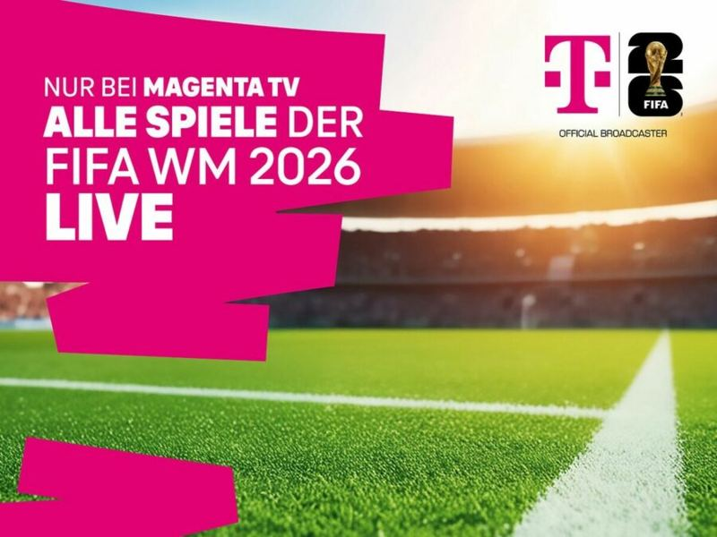
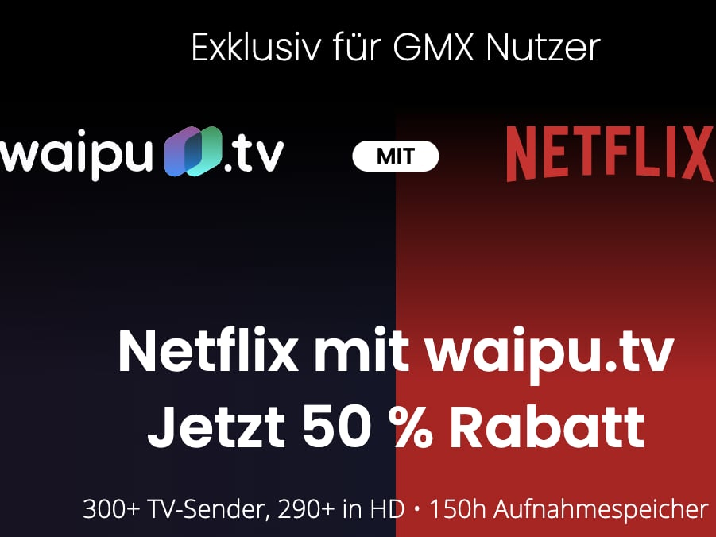
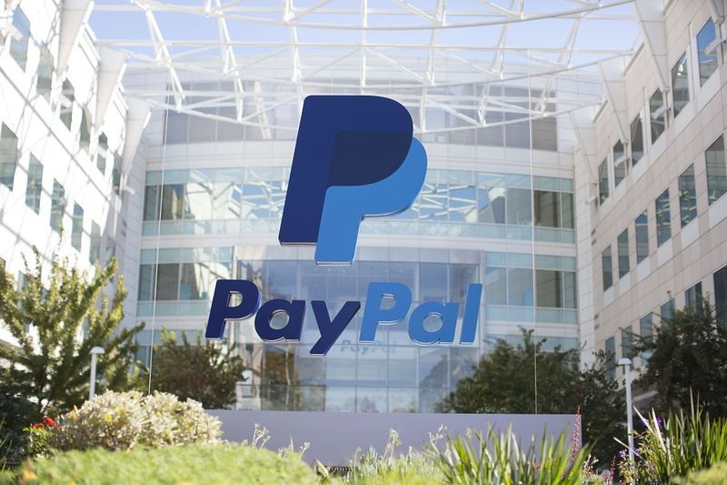

Der Bestand zeigt, dass Telekommunikationsunternehmen weltweit Konnektivität mit digitalen Alltagsdiensten, Garantieversprechen und KI-Werkzeugen anreichern. So stellt SK Telecom 32,5 Millionen Kunden den KI-Assistenten Perplexity Pro gratis zur Verfügung Link und Reliance Jio versorgt bis zu 500 Millionen Nutzer mit Google Gemini AI Link. In Nordamerika dominieren mehrjährige Preisgarantien und gebündelte Streaming-Abos, während afrikanische und asiatische Betreiber Super-Apps aus Finanzdiensten und Alltagsfunktionen formen. Die Grenzen zwischen Netzbetrieb und Ökosystem-Plattform verschwimmen.
Differenzierung
Womit sich Telkos weltweit abheben.
Alles, womit ein Netzbetreiber Kunden gewinnt und hält, das nicht Preis oder Datenvolumen ist – eine Perplexity-Lizenz im Tarif, fünf Jahre Garantie aufs Gerät, ein Streaming-Abo, Betrugsschutz im Netz. Gesammelt aus aller Welt, jedes Beispiel mit Originalquelle.
Das Marktbild
75 BeispieleWelcher Hebel gezogen wird
- Entertainment & Streaming 17
- KI & Assistenten 12
- Garantie & Service-Versprechen 7
- Smart Home & IoT 7
- Loyalty & Perks 6
- Super-App & Ökosystem 6
- Fintech & Payment 5
- Security & Betrugsschutz 5
- Cloud & Speicher 4
- Gaming 2
- Geräte-Programme & Zubehör 2
- Health & Wellbeing 2
Wer am breitesten aufgestellt ist
- Deutsche Telekom Entertainment & Streaming · Gaming · KI & Assistenten · Loyalty & Perks · Security & Betrugsschutz · Smart Home & IoT
- Verizon Cloud & Speicher · Entertainment & Streaming · Garantie & Service-Versprechen · KI & Assistenten
- T-Mobile US Entertainment & Streaming · Garantie & Service-Versprechen · Geräte-Programme & Zubehör · Security & Betrugsschutz
- T-Mobile Entertainment & Streaming · Garantie & Service-Versprechen · Loyalty & Perks
- Reliance Jio Cloud & Speicher · KI & Assistenten · Super-App & Ökosystem
- AT&T Cloud & Speicher · Garantie & Service-Versprechen · Smart Home & IoT
- SK Telecom KI & Assistenten · Security & Betrugsschutz
- Bharti Airtel KI & Assistenten · Loyalty & Perks
Woher die Beispiele kommen
- Nordamerika 26
- Europa 19
- Asien 16
- Afrika & Naher Osten 8
- Global 4
- Lateinamerika 1
- Ozeanien 1
Was sich wiederholt
- KI-Assistenten als Tarifvorteil Mehrere Anbieter machen Premium-KI zum festen Bestandteil ihrer Mobilfunk- oder Internetangebote. Bharti Airtel gewährt 360 Millionen Kunden in Indien ein zwölfmonatiges Perplexity-Pro-Abo Link, und Verizon bündelt Google One AI Premium mit Gemini Advanced für zehn US-Dollar monatlich in ausgewählten Tarifen Link. Die Deutsche Telekom integriert Perplexity direkt in die MeinMagenta-App und vermarktet dies als „Magenta AI“ Link.
- Preisgarantie als Wettbewerbsinstrument Vor allem US-Betreiber sichern ihren Kunden langfristig stabile Preise zu. T-Mobile US garantiert für 5G-Heiminternet, Glasfaser und Mobilfunktarife eine fünfjährige Preisstabilität Link, AT&T unterlegt seine Servicegarantie mit einem mehrjährigen Preisversprechen und gewährt Gutschriften bei Ausfällen Link. Verizon bietet eine dreijährige Preisgarantie für ausgewählte Tarife Link, und Spectrum legt eine mehrjährige Preisgarantie auf sein gebündeltes Angebot Link.
- Streaming-Bündelung mit Wahlfreiheit Immer mehr Anbieter verankern Streaming-Dienste in ihren Tarifen und geben Kunden dabei Auswahl. T‑Mobile US kombiniert Netflix, Hulu und Apple TV+ ohne Aufpreis Link, Swisscom bündelt Netflix und Disney+ im Paket blue Binge Link. Three UK ermöglicht mit „Three Your Way“ die individuelle Zusammenstellung von Perks inklusive Paramount+ Link, und US Mobile belohnt Kunden mit drei oder mehr Unlimited-Premium-Leitungen durch einen frei wählbaren Streaming-Dienst wie Netflix, Max oder das Disney Bundle Link.
Neu auf dem Radar
Nordamerika
Bietet das Self Protection Add-on für 10 $/Monat an, das bis zu 6 Geräte unterstützt, 24/7 Aufzeichnung und App-Steuerung umfasst.Das Einführen eines kostengünstigen Selbstüberwachungs-Add-ons mit kontinuierlicher Aufzeichnung zeigt, wie ein Anbieter ein flexibles Sicherheitsangebot ohne teure professionelle Überwachung etablieren kann.
Nordamerika
T-Mobile bietet Postpaid- und ausgewählten Prepaid-Kunden über das Programm „Magenta Status“ kostenlose Vergünstigungen wie Reise- und Entertainment-Rabatte.Der Move zeigt, wie ein Betreiber durch ein kostenfreies Treueprogramm mit Alltagsvorteilen die Kundenbindung stärkt, ohne auf Tarifrabatte setzen zu müssen.
Europa
Bietet den Magenta SmartHome-Dienst an, der durch die offene QIVICON-Plattform betrieben wird.Die Nutzung einer offenen Smart-Home-Plattform ermöglicht ein breites Geräte-Ökosystem und differenziert sich so von herstellerspezifischen Insellösungen.
Was wächst, was kippt
Anteil an den Aufnahmen des Monats
Smart Home & IoT
+18.7 Punkte
4.0 % → 22.7 %
Loyalty & Perks
+14.2 Punkte
4.0 % → 18.2 %
Entertainment & Streaming
+7.0 Punkte
20.3 % → 27.3 %
Garantie & Service-Versprechen
-13.2 Punkte
13.2 % → 0.0 %
KI & Assistenten
-9.6 Punkte
18.7 % → 9.1 %
Cloud & Speicher
-7.5 Punkte
7.5 % → 0.0 %
Jun 26Jul 26Aug 26
Wer was hat – und was Vodafone Deutschland dazu
0 von 12 Hebeln erfasst
Hebel
Wettbewerber
Vodafone Deutschland
Security & Betrugsschutz
4 · 2degrees, Deutsche Telekom, e&, Singtel Group, SK Telecom, SoftBank, Globe Telecom
noch nicht erfasst
Ein Hebel gilt erst dann als Lücke, wenn die eigene Seite mit Datum
gepflegt ist. Was hier „noch nicht erfasst“ heißt, ist ungeprüft – nicht
fehlend. Die Liste steht in config/vodafone_hebel.yaml.
KI & Assistenten
12 BeispieleWettbewerber verschenken eine kostenpflichtige Premium-KI oder bauen sie fest ins Gerät ein und machen den Assistenten zum Tarif-Vorteil.

Deutsche TelekomEuropa
Deutsche Telekom bietet Mobilfunkkunden Google-One-Abos mit Rabatt an, inklusive Cloud-Speicher und KI-Funktionen (Gemini Advanced).KI-gestützte Mehrwertdienste als Bündelangebot könnten die Kundenbindung stärken und zusätzliche Umsätze bringen.
teltarif.de ↗ neu
Asien
Airtel bietet allen seinen Kunden in Indien ein kostenloses 12-monatiges Perplexity Pro Abonnement an.Dieser Move ist interessant, weil er einen Premium-KI-Dienst als Massen-Benefit für die gesamte Kundenbasis einführt, ohne eine Preiserhöhung vorzunehmen.
Lateinamerika
TIM Brasil integriert als erste brasilianische Operateurin ihre App in ChatGPT, sodass Kunden über den Chatbot Support und Dienste nutzen können.Innovativer KI-Kanal für Kundenservice und Vertrieb.
3 weitere
Entertainment & Streaming
17 BeispieleStreaming, Sport- und TV-Rechte als Bindungsanker. Die Besten bündeln nicht nur ein Abo, sondern ein Aggregator-Erlebnis.
In Nordamerika ist die Integration von Streaming-Paketen fast flächendeckend, von werbefreiem Disney+ bei Total Wireless [Link](https://www.whistleout.com/CellPhones/Guides/phone-plans-with-free-streaming-perks) bis zu den Wahlangeboten bei US Mobile [Link](https://www.whistleout.com/CellPhones/Guides/free-entertainment-extras). Europäische Anbieter wie Swisscom und Three UK setzen auf flexible, auf lokale Präferenzen abgestimmte Pakete und stärken so die Kundenbindung jenseits des reinen Netzpreises.

FreeGlobal
Freebox-Abonnenten in Frankreich erhalten über Amazon Prime wöchentlich vier neue PC-Spiele kostenlos.Content-Bündelung als Differenzierungsmerkmal im Breitbandmarkt.

Deutsche TelekomEuropa
Deutsche Telekom hat im 2. Quartal 2026 rund eine Million neue TV-Kunden in Deutschland gewonnen.Zeigt die Zugkraft exklusiver Sportrechte zur Kundenakquise.

GMXGlobal
GMX bietet Interessenten Netflix und das waipu.tv Perfect Plus-Paket für ein Jahr zum halben Preis an – ein attraktives Streaming-Bundle im deutschen Markt.Das erhöht den Druck auf deutsche Streaming- und TV-Angebote.
teltarif.de ↗ neu
TurkcellEuropa
Turkcell bündelt in seiner TV+-Plattform zur neuen Saison Sportinhalte von S Sport, tabii Spor und Eurosport, darunter La Liga, Serie A, NBA, EuroLeague, UFC, MotoGP sowie Teile der Champions League und des FA Cup.Zeigt, wie Wettbewerber Sportrechte-Bündelung als Differenzierungsmerkmal nutzen.
8 weitere
Garantie & Service-Versprechen
7 Beispiele„Sorglos"-Versprechen differenzieren ohne Preisnachlass und zahlen voll auf Vertrauen ein: verlaengerte Garantie, Akkutausch, Preis-, Netz- und Zufriedenheitsgarantien.

T-MobileNordamerika
T-Mobile bietet eine 5-Jahres-Preisgarantie für 5G-Heiminternet, Glasfaser-Internet und Mobilfunktarife an.Eine mehrjährige Preisgarantie ist ein klares Serviceversprechen, das Kunden Planungssicherheit gibt und sich von kurzfristigen Lockangeboten abhebt.
Nordamerika
AT&T hat einen Service-Garantie gestartet, der ein mehrjähriges Preisversprechen beinhaltet.Dieser Move ist interessant, weil er das Konzept der Preisgarantie aufgreift, aber mit einem Service-Versprechen kombiniert, was eine Differenzierung jenseits des reinen Preises darstellt.
T-MobileNordamerika
T-Mobile bietet eine 5-Jahres-Preisgarantie für seine neuen Experience-Tarife an.Dieser Move ist interessant, weil er eine langfristige Preissicherheit über fünf Jahre verspricht, was im Markt ein starkes Differenzierungsmerkmal darstellt.
Nordamerika
Verizon bietet eine dreijährige Preisgarantie für ausgewählte Mobilfunktarife.Selbst der Premium-Anbieter Verizon reagiert mit einer Preisgarantie auf Abwanderung.
Geräte-Programme & Zubehör
2 BeispieleDer Gerätekauf als Bindungsanker: jährliches Upgrade, faire Inzahlungnahme, refurbished, exklusive Geräte und gebündeltes Zubehör – Value ohne Preiskampf.
Nordamerika
Yearly Upgrade: garantiert jedes Jahr ein neues Top-Smartphone.Ein Immer-das-neueste-Gerät-Versprechen bindet ohne Preisnachlass.
Security & Betrugsschutz
5 BeispieleSchutz vor Betrug, Spam und Deepfakes wird vom Add-on zum Marken-Asset – oft kostenlos und automatisch im Netz.

Globe TelecomAsien
2,7 Mio. $ 2025 in KI-gestützte Spam- und Scam-Bekämpfung investiert.KI-Betrugserkennung direkt im Netz als Vertrauensargument.
Ozeanien
Im März 2026 kündigten neuseeländische Telekommunikationsanbieter eine gemeinsame Kooperation für Echtzeit-Schutz gegen Betrug und Abzocke an.Branchenweite Zusammenarbeit gegen Scams ist auch in Europa denkbar.
2degrees.nz ↗ neu
Europa
Die fünf großen Netzbetreiber haben ein gemeinsames KI-Joint-Venture namens Syntelligence AI gegründet, um Deepfake-Sprachbetrug zu bekämpfen.Dieser branchenübergreifende Zusammenschluss von etablierten Telkos zur gemeinsamen KI-Abwehr von Deepfakes ist ein ungewöhnlicher und strategischer Differenzierungsmove im Sicherheitsbereich.
Asien
Die fünf großen Telekommunikationsanbieter haben ein gemeinsames KI-Joint-Venture gegründet, um Deepfake-Sprachbetrug zu bekämpfen.Dieser branchenübergreifende Zusammenschluss ist interessant, weil er zeigt, wie konkurrierende Netzbetreiber gemeinsam eine hochkomplexe Sicherheitsbedrohung adressieren.
Fintech & Payment
5 BeispieleWallet, Kredit, Versicherung und Banking direkt in der Telco-App – in Wachstumsmärkten die stärksten Ökosysteme überhaupt.
Vor allem in Afrika treiben Betreiber mobile Bezahldienste zu zentralen Ökosystemen aus. Vodacom integriert PayPal in die M‑Pesa-Super-App und ermöglicht damit grenzüberschreitende Zahlungen [Link](https://www.dignited.com/119603/tanzania-gets-paypal-m-pesa-s

stcAfrika & Naher Osten
Die Mobile-Wallet stc pay in Bahrain hat sich mit PayPal zusammengeschlossen, damit Nutzer ihre PayPal-Konten direkt in der stc pay App verknuepfen und Geld nahtlos zwischen beiden Plattformen ueber Landesgrenzen hinweg transferieren koennen.Eine direkte PayPal-Integration wuerde grenzueberschreitende Geldtransfers fuer Migranten und Reisende deutlich attraktiver machen und koennte in Maerkten mit hoher Diaspora-Anbindung kopiert werden.
Global
TerraPay kooperiert mit HDBank und ermöglicht Echtzeit-Auszahlungen von Vietnam auf Bankkonten und Mobile Wallets weltweit; weitere Deals in Vietnam folgen.Vorlage für M-Pesa: internationale Echtzeit-Remittances und Wallet-to-Wallet-Interoperabilität als Wachstumshebel.
Afrika & Naher Osten
Vodacom Tansania hat eine Partnerschaft mit PayPal geschlossen, die es M-Pesa-Nutzern ermöglicht, grenzüberschreitende Zahlungen zu empfangen und zu senden.Dies ist ein starkes Signal für die Integration von Mobile Money in globale Zahlungsnetzwerke.

Vodacom / M-PesaAfrika & Naher Osten
M-Pesa und PayPal: grenzüberschreitende Zahlungen in der Super-App (Tansania).Super-App & Ökosystem
6 BeispieleDie Telco-App wird von der Selfcare-App zur Alltags-Plattform mit eingebauten Partner-Diensten.

MTN GroupAfrika & Naher Osten
MTN Bayobab, die digitale Infrastruktursparte der MTN Group, hat eine Partnerschaft mit Telna geschlossen, um Reise-eSIM-Dienste in mehreren afrikanischen Märkten anzubieten.Vodafone-Afrika-Gesellschaften (Vodacom, Safaricom) könnten Marktanteile an Reisende verlieren, wenn MTN ein attraktives grenzüberschreitendes eSIM-Angebot platziert.

SafaricomAfrika & Naher Osten
Safaricom testet, Funktionen aus mySafaricom in die M-PESA-App zu integrieren, um Alltagsdienste zu bündeln.Dieser Schritt zeigt, wie ein afrikanischer Betreiber seine starke Mobile-Money-Plattform zur zentralen Super-App ausbaut und so die Kundenbindung über reine Telekomdienste hinaus stärkt.

SafaricomAfrika & Naher Osten
Safaricom konsolidiert sein Ökosystem mit Safaricom My OneApp, das Finanz- und Telekomdienste in einer App vereint.Die Konsolidierung mehrerer Dienste in einer App ist ein strategischer Differenzierungsmove, der Nutzerkomfort erhöht und Wechselbarrieren aufbaut.
Asien
Telkomsel integriert die Video-Editing-App CapCut (von ByteDance) in seine MyTelkomsel-App, sodass Nutzer direkt im Portal Videos bearbeiten und hochladen können.Telkomsel macht seine App zur Content-Plattform.
OrangeAfrika & Naher Osten
Max it: Super-App mit Konto, Money, Shopping, Musik, TV und Ticketing.Cloud & Speicher
4 BeispieleKostenloser, oft datensouveräner Cloud-Speicher als Tarif-Extra – günstig und ein guter Bindungsanker.
Telkos versuchen, mit großzügigem Gratis-Speicher gegen die Dominanz großer Tech-Plattformen anzutreten. O2/Telefónica stellt Mobil- und Fiber-Kunden bis zu 10 TB kostenlos zur Verfügung [Link](https://www.thefastmode.com/technology-solutions/49163-o2-expands-cloud-storage-service-with-10-tb-free-space-for-mobile-fiber-customers) und Reliance Jio attackiert Google und Apple mit einem ebenfalls umfangreichen Gratis-Cloud-Angebot [Link](https://finshots.in/archive/jios-free-storage-to-beat-google-and-apple-100-gb-free-cloud-storage/). In Nordamerika bleibt Cloud-Speicher dagegen häufiger ein kostenpflichtiges Zusatzprodukt, etwa bei Verizon [Link](https://www.verizon.com/support/cloud-storage-perk-faqs/).

O2 / TelefónicaEuropa
O2 Cloud: bis zu 10 TB Gratis-Speicher für Mobil- und Fiber-Kunden.Großzügiger, EU-gehosteter Gratis-Speicher als Bindungs- und Datensouveränitäts-Argument.
Nordamerika
Verizon bietet Unlimited Cloud Storage als kostenpflichtiges Zusatzfeature für 10 US-Dollar pro Monat bei ausgewählten Mobilfunk- und Internet-Tarifen an.Dieser Move zeigt, wie ein Netzbetreiber Cloud-Speicher als optionales, aber günstiges Add-on zur Kundenbindung und Tarifaufwertung einsetzt.
Nordamerika
AT&T stellt Kunden mit dem AT&T Prepaid Ultra-Tarif den AT&T Personal Cloud-Dienst zum Sichern, Synchronisieren und Teilen von Inhalten zur Verfügung.Dieser Move zeigt, wie AT&T Cloud-Speicher als exklusives Prepaid-Perks einsetzt, um sich im hart umkämpften Prepaid-Markt zu differenzieren.

Reliance JioAsien
JioCloud: großzügiger Gratis-Speicher, greift Google und Apple an.Gratis-Cloud als Tarif-Extra im Massenmarkt.
Smart Home & IoT
7 BeispieleSicherheit und Steuerung fürs Zuhause am Anschluss – margenstark und bindet den ganzen Haushalt.

SunriseEuropa
Sunrise hat über die Egardia-Plattform einen abonnementbasierten Smart-Home-Sicherheitsdienst unter eigener Marke eingeführt.Dies zeigt, wie ein Betreiber ohne eigene Entwicklung eines Sicherheitsökosystems schnell ein Smart-Home-Angebot lancieren und sich so von reinen Konnektivitätsdiensten differenzieren kann.
Nordamerika
Bietet das Self Protection Add-on für 10 $/Monat an, das bis zu 6 Geräte unterstützt, 24/7 Aufzeichnung und App-Steuerung umfasst.Das Einführen eines kostengünstigen Selbstüberwachungs-Add-ons mit kontinuierlicher Aufzeichnung zeigt, wie ein Anbieter ein flexibles Sicherheitsangebot ohne teure professionelle Überwachung etablieren kann.
Europa
Bietet den Magenta SmartHome-Dienst an, der durch die offene QIVICON-Plattform betrieben wird.Die Nutzung einer offenen Smart-Home-Plattform ermöglicht ein breites Geräte-Ökosystem und differenziert sich so von herstellerspezifischen Insellösungen.

SunriseEuropa
Setzt die neue Wholesale-Plattform von Egardia ein, um ein eigenmarkiges, abonnementbasiertes Smart-Home-Sicherheitsangebot bereitzustellen.Verdeutlicht, wie ein Netzbetreiber über eine White-Label-Partnerschaft ohne eigene Entwicklung in den Smart-Home-Sicherheitsmarkt einsteigt.
prnewswire.com ↗ neu
Gaming
2 BeispieleCloud-Gaming als greifbarer Netz-Beweis – niedrige Latenz wird zum Erlebnis statt zur Technik-Folie.

Deutsche TelekomEuropa
5G+ Gaming: NVIDIA GeForce NOW gebündelt, über niedrige Latenz vermarktet.Cloud-Gaming als greifbarer Netz-Beweis statt eigener Plattform.
Global
Smart Communications (Philippinen) hat eine Partnerschaft mit dem Cloud-Gaming-Anbieter Blacknut geschlossen, um Konsolen-Qualitätsspiele auf Mobilgeräte zu bringen.Zeigt, dass Cloud-Gaming als Differenzierungsmerkmal im Mobilfunkmarkt an Bedeutung gewinnt.
Loyalty & Perks
6 BeispieleErlebnis-Perks und exklusive Vorverkäufe machen das tägliche App-Öffnen zur Gewohnheit – Bindung über Nutzen.

Bharti AirtelAsien
Airtel hat in seinem Treueprogramm Airtel Insider die Pocket FM Premium Subscription hinzugefügt, ohne den Tarif zu ändern.Bündelung von Audio-Entertainment in einem Treueprogramm.
Nordamerika
T-Mobile bietet Postpaid- und ausgewählten Prepaid-Kunden über das Programm „Magenta Status“ kostenlose Vergünstigungen wie Reise- und Entertainment-Rabatte.Der Move zeigt, wie ein Betreiber durch ein kostenfreies Treueprogramm mit Alltagsvorteilen die Kundenbindung stärkt, ohne auf Tarifrabatte setzen zu müssen.
t-mobile.com ↗ neu
Nordamerika
T-Mobile bietet Prepaid- und Postpaid-Kunden mit 'Magenta Status' ein kostenloses Treueprogramm, das u.a. die wöchentliche Aktion 'T-Mobile Tuesdays' mit Gratis-Zugaben und Partnerrabatten umfasst.Ein wöchentliches, spielerisches Belohnungsformat geht über klassische Punktesysteme hinaus und adressiert emotionale Bindung statt reiner Transaktionslogik.
Nordamerika
T-Mobile bietet mit „Magenta Status“ ein kostenloses Treueprogramm für Postpaid- und die meisten Prepaid-Kunden, das u.a. eine DoorDash DashPass-Mitgliedschaft sowie Rabatte auf Hotels und Entertainment umfasst.Das Beispiel zeigt eine Differenzierung über kostenlose Zusatzleistungen und Partnerkooperationen statt über den Tarifpreis.
whistleout.com ↗ neu
O2 / Virgin Media O2Europa
Priority: exklusive Gewinnspiele, Ticket-Presales und tägliche Perks.Health & Wellbeing
2 BeispieleTelemedizin und Wellbeing als Differenzierung mit Nutzenversprechen – in Wachstumsmärkten erprobt.

Asien
d Healthcare und Telemedizin-Dienste im Kunden-Ökosystem.Gesundheits-Services als Differenzierung mit gesellschaftlichem Nutzen.
Zwei Quellen speisen diese Seite: der wöchentliche Presse-Crawl der beobachteten Netzbetreiber und ein rotierender Web-Sweep (Brave Search + KI-Prüfung), der gezielt nach Differenzierung jenseits des Preises sucht. Jedes Beispiel trägt eine Originalquelle und ein Prüfdatum; nicht belegte Beispiele werden nicht aufgenommen.